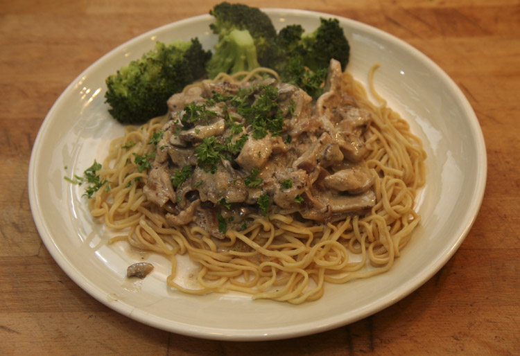

Chicken Stroganoff

Description
This chicken stroganoff is so good and so easy to make in the slow cooker on a busy day.
It is a simple, creamy sauce with cubed chicken breast. Serve over hot cooked rice or pasta.
- Prep Time: 10 mins
- Cook Time 5 hrs 30 mins
- Total Time: 5 hrs 40 mins
- Servings: 4
Ingredients
- 4 skinless, boneless chicken breast halves-cubed
- ⅛ cup butter
- 1 (.7 ounce) package dry italian-style salad dressing mix+
- 1 (10.5 ounce) can condensed cream of chicken soup
- 1 (8 ounce) package cream cheese
Steps
- Gather all ingredients.
- Put chicken, butter, and dressing mix in a slow cooker.
- Mix together well and cook on low for 6 to 6 hours.
- Add condensed soup and cream chesse. Mix together and cook on
High until heated through and warm, about 30 minutes.
- Serve and enjoy!
Nutrition Facts (per serving)
- 456 Calories
- 31g Fat
- 10g Carbs
- 33g Protein
Home